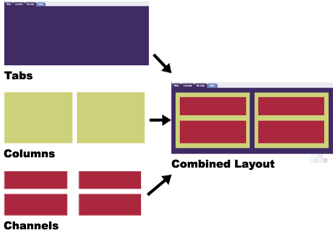
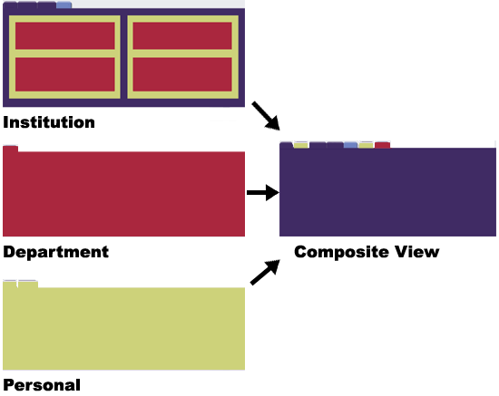

The layout of Academus Portal is based on a combination of tabs, columns and channels controlled by the security model. The portal takes multiple layouts and combines them to present an end user with a final composite view. Academus tracks individual changes that the end user makes to the composite view. This allows an end user to customize their different layouts, as long as customization is permitted under the parameters of the security model. Each institution will establish its own unique set of tabs which will provide the basis for the end user's personalized composite view .

In the final composite view, the user will be presented with a format that incorporates any number of tabs, channels and portlets. Remember that the security model used to authenticate a user's login will determine each end user's composite view.
